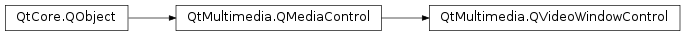

QVideoWindowControl¶
Detailed Description¶
The
PySide2.QtMultimedia.QVideoWindowControlclass provides a media control for rendering video to a window.The
PySide2.QtMultimedia.QVideoWindowControl.winId()propertyPySide2.QtMultimedia.QVideoWindowControlallows a platform specific window ID to be set as the video render target of aPySide2.QtMultimedia.QMediaService. ThePySide2.QtMultimedia.QVideoWindowControl.displayRect()property is used to set the region of the window the video should be rendered to, and thePySide2.QtMultimedia.QVideoWindowControl.aspectRatioMode()property indicates how the video should be scaled to fit thePySide2.QtMultimedia.QVideoWindowControl.displayRect().QVideoWindowControl *windowControl = mediaService->requestControl<QVideoWindowControl *>(); windowControl->setWinId(widget->winId()); windowControl->setDisplayRect(widget->rect()); windowControl->setAspectRatioMode(Qt::KeepAspectRatio);
PySide2.QtMultimedia.QVideoWindowControlis one of a number of possible video output controls.The interface name of
PySide2.QtMultimedia.QVideoWindowControlisorg.qt-project.qt.videowindowcontrol/5.0as defined inQVideoWindowControl_iid().See also
QMediaService.requestControl()QVideoWidget
-
class
PySide2.QtMultimedia.QVideoWindowControl([parent=nullptr])¶ Parameters: parent – PySide2.QtCore.QObjectConstructs a new video window control with the given
parent.
-
PySide2.QtMultimedia.QVideoWindowControl.aspectRatioMode()¶ Return type: PySide2.QtCore.Qt.AspectRatioModeReturns how video is scaled to fit the display region with respect to its aspect ratio.
-
PySide2.QtMultimedia.QVideoWindowControl.brightness()¶ Return type: PySide2.QtCore.intReturns the brightness adjustment applied to a video overlay.
Valid brightness values range between -100 and 100, the default is 0.
-
PySide2.QtMultimedia.QVideoWindowControl.brightnessChanged(brightness)¶ Parameters: brightness – PySide2.QtCore.int
-
PySide2.QtMultimedia.QVideoWindowControl.contrast()¶ Return type: PySide2.QtCore.intReturns the contrast adjustment applied to a video overlay.
Valid contrast values range between -100 and 100, the default is 0.
-
PySide2.QtMultimedia.QVideoWindowControl.contrastChanged(contrast)¶ Parameters: contrast – PySide2.QtCore.int
-
PySide2.QtMultimedia.QVideoWindowControl.displayRect()¶ Return type: PySide2.QtCore.QRectReturns the sub-rect of a window where video is displayed.
-
PySide2.QtMultimedia.QVideoWindowControl.fullScreenChanged(fullScreen)¶ Parameters: fullScreen – PySide2.QtCore.bool
-
PySide2.QtMultimedia.QVideoWindowControl.hue()¶ Return type: PySide2.QtCore.intReturns the hue adjustment applied to a video overlay.
Value hue values range between -100 and 100, the default is 0.
-
PySide2.QtMultimedia.QVideoWindowControl.hueChanged(hue)¶ Parameters: hue – PySide2.QtCore.int
-
PySide2.QtMultimedia.QVideoWindowControl.isFullScreen()¶ Return type: PySide2.QtCore.boolIdentifies if a video overlay is a fullScreen overlay.
Returns true if the video overlay is fullScreen , and false otherwise.
-
PySide2.QtMultimedia.QVideoWindowControl.nativeSize()¶ Return type: PySide2.QtCore.QSizeReturns a suggested size for the video display based on the resolution and aspect ratio of the video.
-
PySide2.QtMultimedia.QVideoWindowControl.nativeSizeChanged()¶
-
PySide2.QtMultimedia.QVideoWindowControl.repaint()¶ Repaints the last frame.
-
PySide2.QtMultimedia.QVideoWindowControl.saturation()¶ Return type: PySide2.QtCore.intReturns the saturation adjustment applied to a video overlay.
Value saturation values range between -100 and 100, the default is 0.
-
PySide2.QtMultimedia.QVideoWindowControl.saturationChanged(saturation)¶ Parameters: saturation – PySide2.QtCore.int
-
PySide2.QtMultimedia.QVideoWindowControl.setAspectRatioMode(mode)¶ Parameters: mode – PySide2.QtCore.Qt.AspectRatioModeSets the aspect ratio
modewhich determines how video is scaled to the fit the display region with respect to its aspect ratio.
-
PySide2.QtMultimedia.QVideoWindowControl.setBrightness(brightness)¶ Parameters: brightness – PySide2.QtCore.intSets a
brightnessadjustment for a video overlay.Valid brightness values range between -100 and 100, the default is 0.
-
PySide2.QtMultimedia.QVideoWindowControl.setContrast(contrast)¶ Parameters: contrast – PySide2.QtCore.intSets the
contrastadjustment for a video overlay.Valid contrast values range between -100 and 100, the default is 0.
-
PySide2.QtMultimedia.QVideoWindowControl.setDisplayRect(rect)¶ Parameters: rect – PySide2.QtCore.QRectSets the sub-
rectof a window where video is displayed.
-
PySide2.QtMultimedia.QVideoWindowControl.setFullScreen(fullScreen)¶ Parameters: fullScreen – PySide2.QtCore.boolSets whether a video overlay is a
fullScreenoverlay.
-
PySide2.QtMultimedia.QVideoWindowControl.setHue(hue)¶ Parameters: hue – PySide2.QtCore.intSets a
hueadjustment for a video overlay.Valid hue values range between -100 and 100, the default is 0.
-
PySide2.QtMultimedia.QVideoWindowControl.setSaturation(saturation)¶ Parameters: saturation – PySide2.QtCore.intSets a
saturationadjustment for a video overlay.Valid saturation values range between -100 and 100, the default is 0.
-
PySide2.QtMultimedia.QVideoWindowControl.setWinId(id)¶ Parameters: id – PySide2.QtGui.WIdSets the
idof the window a video overlay end point renders to.
-
PySide2.QtMultimedia.QVideoWindowControl.winId()¶ Return type: PySide2.QtGui.WIdReturns the ID of the window a video overlay end point renders to.
© 2018 The Qt Company Ltd. Documentation contributions included herein are the copyrights of their respective owners. The documentation provided herein is licensed under the terms of the GNU Free Documentation License version 1.3 as published by the Free Software Foundation. Qt and respective logos are trademarks of The Qt Company Ltd. in Finland and/or other countries worldwide. All other trademarks are property of their respective owners.